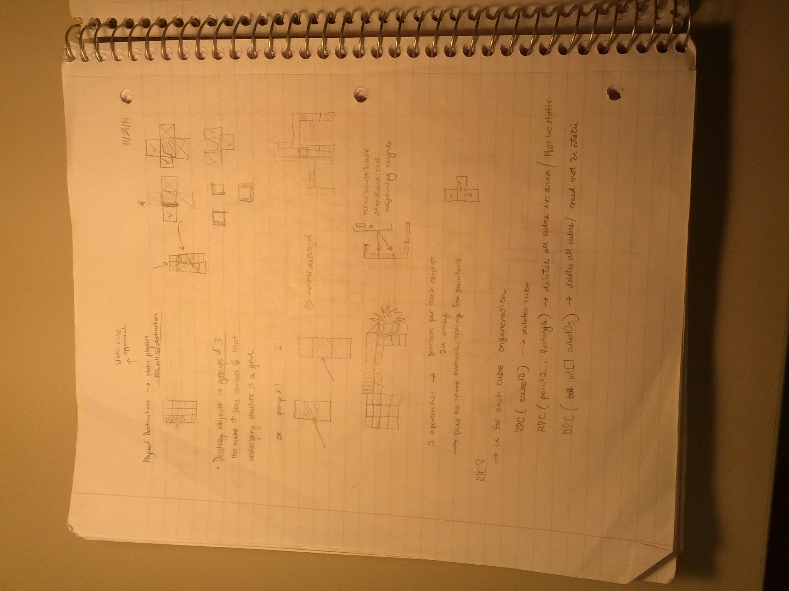
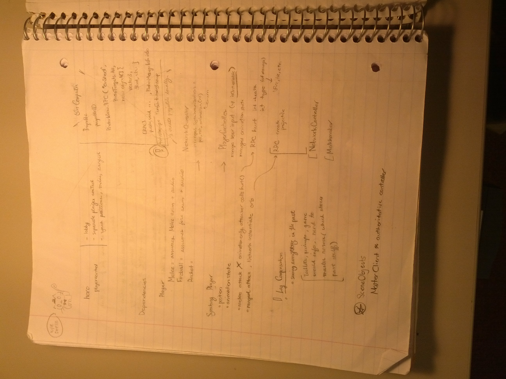
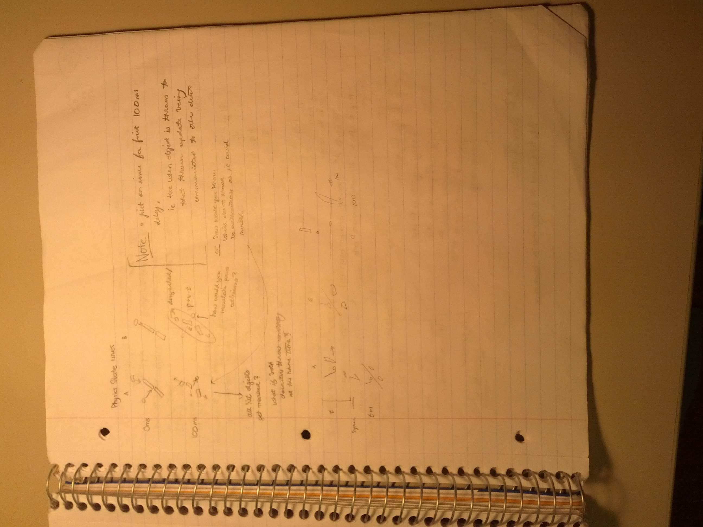
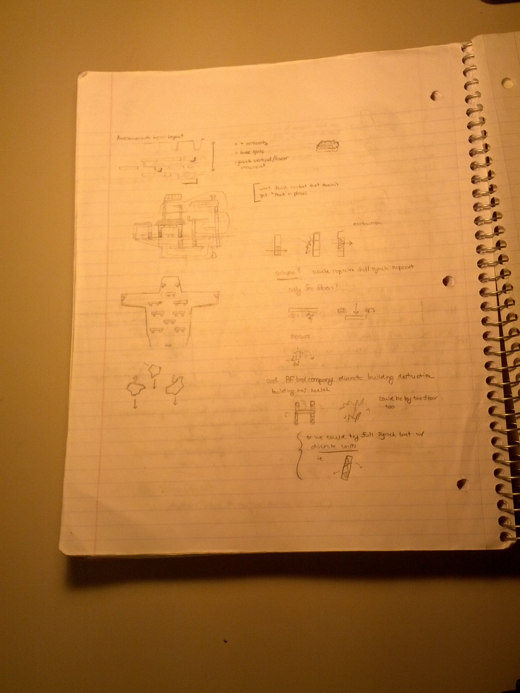
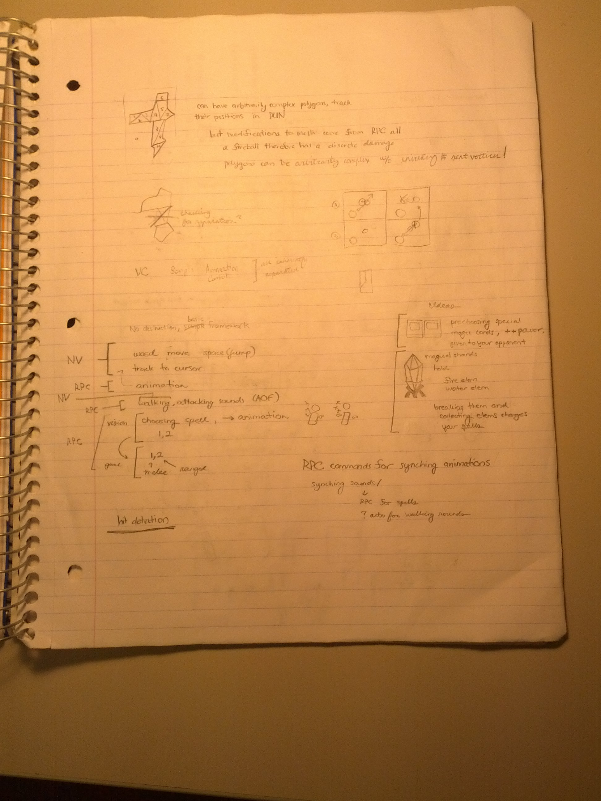

|
Final-Limbonuauts
|
|
Final-Limbonuauts
|
Newest entries are at the top
Got these sounds working: involved looking a lot online for the right sounds. Thunder, Lighting, Explosion, Spike Thud
Also worked on getting destructible terrain to look better. This involved spawning debris particles using the VisualObjectsEffect.cs interface that I added in. It works similar to the AbObjectEffect.cs class that I had created before except that its effects are purely visual.
I started the day by deleting the entire old map I had created before. I didn’t like the feel of the map - it was easy to get stuck at the bottom of the map and it was pretty hard to move, worse so when the map was destroyed after playing for a while. I therefore deleted the entire map and resolved to start over from scratch. Given how the inspiration from Auguillon didn’t seem to help I decided to strike out on my own and do whatever design for the map that came to mind. I also switched out the textures. The stone and rock textures I was applying to the destructible terrain objects looked really ugly - it had that worms like look where the explosions look very obvious and out of place. I know I don’t have enough time to make the explosions look nice, but Limbo came to mind for a quick nice looking art style that I might borrow from. Cuts into a black polygon look a lot less jarring than cuts into a polygon with a clearly uniform texture applied to it. I then made the mistake of trying to create the trees and ornaments and the background for the map before everything came together. I ended up wasting more time than I needed to… In the end for the extra ornaments I used tree and shrub outlines from online and created sprites from those. I would eventually make the background by first creating the entire level and then creating the background from there.
I started creating the new map with a hill with rocks and the new trees. I wanted some form of coverage which would come from the trees but also wanted to make them destructible too so they wouldn’t float in the air when shot. To do this I was able to use an existing sychronized behavior - explosions. Since explosions in clients happen at the same location regardless I am able to add a script to trees that detects a nearby explosion. When a nearby explosion is detected the tree activates its fall script - physicalizes itself, falls down as if it was cut and therefore afterwards becomes a physical object in the game.
As I developed the map, a general vision began to take shape. Starting with the hill and the nearby cave, I decided to make the hill be a piece of land embedded in a larger cave like structure. I thought this would add a nice aesthetic, additionally it gives the map design a good excuse to have floating platforms above the hill.
Upon finishing the map I also added in fog and rain systems. Here I was doing more work with the Unity ProjectileSystem that I had become acquanted with a few days before. The inspiration for the fog came partly from Limbo where the blackish background was made to look more interesting by adding in white highlights. Also, a dark forest at night seems to be the perfect match for fog anyhow.
Also worked on a sound system. Used Unity’s reverb sound manager to manage in sound fade in and outs. The sounds I used were ambient for the rain and cave noises that I hoped would increase immersion.
I still need to rework player sounds, add in sounds to explosions and projectile hits. Also need to add in projectiles that are thrown from explosions. Worked a lot today! 2 p.m. to 5 a.m. with a 30 minute dinner in there. In essence practically created the ENTIRE art style from the basic pink default texture to the limbo like aesthetic it has right now.
Worked on the different spells. Got blink, ice spike, and a smaller projectile to work. These all took some time due to synchronization issues and small implementation issues. I got a particle system to work along with each spell as well. Ice spikes worked differently in that its explosion doesn’t exist, instead it “spawns” a hit projectile. Adding this additional feature took quite a bit of work as I had to rework the interface for AbObjectEffect which is run whenever a collision takes place. The interface was too contrained and as a resutl I was not able to get the ice spike effect that I had wanted. After reworking the interface I was able to move ahead. Blink was relatively straightforward except for the fact that I needed to do a lot of raycasting to make sure the person did not blink straight into a wall or into the ground! Smaller projectiles attack involved more particle effects work. Working on it has made me interested in using Unity’s built in particle system a lot more. I also playtested my game with Nigel and it seems everything is working. Lastly, I played around with the textures on the map, before there was none so it defaulted to the pink texture, I downloaded a texture pack online. However, applying these textures results in a dull looking map - I don’t think I have time to make it look better though… Now that I have all of the basic implementations done for the game, I can shift entirely to the visual aspects.
Thought I could cheat by just having the explosions get synched. Meaning that all projectiles will explode at the same position across all clients thereby making the static destructible terrain consistent among all clients. This approach seems to break because of a past decision to make all projectiles shot by the shooting player out of synch from the other client’s versions of that projectile. The shooter only generates the projectile 100 ms after he shoots which means that syncing explosion positions gets a lot harder, we’d now need to communicate the actual location that the projectile exploded at rather than a simple timestamp (which they could use to reconstruct the explosion event). The 100 ms shoot delay was added to deal with communication lag, as projectiles would consistently shoot through their target as the target took 100 ms to tell the shooter their shot had exploded. Of course the system described above cannot work if the terrain was no kinematic (ie. could move in the screen).
This system is just a way to cop out of using PhotonViews to synch the static terrain, which secondarily works to reduce network usage (no need to call multiple RPC destroy terrain events, only need to add a Vector2 to the DestroyProjectile RPC which is already called). Having the use PhotonView RPC calls to manually synch terrain would be bad for two reasons. Firstly, we would need to transmit the position and rotation of the exploded object to every terrain piece that was affected because as mentioned above the projectiles aren’t actually synched correctly between clients. Secondly, each RPC call has a base overhead due to network protocol (information about sender and receiver for one) and having each terrain object having a separate PhotonView would mean a lot more RPC calls on explosions.
System working now. The game now has a static destructible terrain system which seems to be synced correctly! Kinda running out of time so I should probably polish things… However, polish can mean a lot of things at this point as both art style and gameplay are pretty rudimentary. I’m going to focus on gameplay - art style can always come later and at low cost (no architecture issues here!). I want to add more spells and abilities to the players. I want there to be a “blink” spell that allows the player to quickly zoom between places, an ice spell, etc.
Resolved to work on additional character moves / special abilites to round out gameplay.
Before I worked on that I ended up tweaking the level now that I have the ability to create the destructible terrain myself. However, whenever I play tested these levels I was particularly dissatisfied with how constrained the movement felt. I made the buildings and passageways way too narrow and as a result whenever I jumped I almost certainly got snagged in the enivornment. Therefore moving around wasn’t fun and more of a pain. I wanted to take a page out of Awesomenaut’s level design. Their levels allow for free movement in the horizontal and vertical directions so you never feel constrained when moving around. However, they also have two important features that I need to incorporate into the game. Firstly platforms do not block jumps so you can “jump through them” but cannot fall through them. Secondly, they have “Hide Areas” which only grant visibility to players within their rectangle. I am therefore going to incorporate these two elements into the game.
Move through platforms work by having a trigger that sets its parent polygon collider (the actual platform) to be a trigger or not. This allows projectiles to always hit a platform while allowing for the player to move through.
Hide areas can work in a similar fashion. The only problem here is that hide areas will seem strange when the actual hide area is destroyed. This can be rectified by procedurally generating a mesh that only covers the area of the hide area that is actually obstructed by some object. This would involve a rudimentary vision system. The system would work as follows: controller object for a hide area tracks all obstructing objects we iterate through all obstructing objects, these are polygons convert the cartesian points of the polygon to polar coordinates find the lowest and highest angle polar coordinate, convert back to cartesian. the resulting two points are the view obstructing points, the area in between them cannot be seen (visualized as a cone from the player to these two points).
This system can be implemented later, for now I’ll just use a simple hide area trigger that will disable and enable a sprite renderer that covers said hide area.
With these elements in place I want to create a basic level inspired by the features of the Aiguillon station map that I have above. I’m first going to draw the map out by hand and identify the gameplay elements that the map has. Then working from that model I will design my own map.
still need to implement spells: blink, force jump, ice spike, fire?, push (1) need to add in better graphics -> explosion effects, ambient opacity, character models + animation (2) (4.5 days left)
Working on incorporating synched destructible terrain to the game. Went down the wrong path in the beginning but now I’m on track. Note that the system I am opting for is static. Therefore the user can only destroy terrain but cannot detach parts of the terrain and make other parts collapse. This completely eliminates the synchronization issues that will come with applying a physical force to some common object. Wrong path: tried to make the game a block based destructible system. This was a waste of three hours… I thought that having this system would reduce RPC synchs needed on destruction, however a much more complex and realistic system can be achieved using Polygon Clipping.
|  |
| Notebook plans on destructible terrain |
Right path: allow for complex polygon destruction. Represent the world as a polygon collider. On collisions use Polygon Clipping, where the clip polygon can be preset and identifiable by a number. Clip the polygon from the hit polygon.
Implementation wise this required some thought on how to incorporate all the necessary libraries into Unity. I am using the PolyClipper library to cut the polygons. I used a script that someone created to triangulate a polygon defined by points. I looked up online on how to procedurally generate a filled polygon by creating a mesh with points. These steps took quite a bit of Googling.
An issue I ran into was with float precision. I know that the clients might implement their floats differently so cutting the polygons (which have float points) might lead to different cut polygons among clients. Also, PolyClipper only uses IntPoints in order to be as precise as possible. Therefore I created methods to convert from floats to ints (and back the other way) and added.in a precision constant. I am assuming that the non decimal portion of floats will be the same across clients. Then I only look at the three decimal places and convert that to an int as well. Therefore we only look at each point to three decimal places across all clients. I haven’t tested this yet, but am hoping that this degree of precision isn’t too high that clients would have different cut polygon results, but isn’t too low as well so that imprecision would cause points to “jump” whenver the underlying polygon was cut.
Implementation wise fairly straightforward. Involved adding in additional methods for converting between the different data representations of points for the Clipper library and for Unity. Added in a general helper class called PolyClipper.cs that just gets Vector2[] and returns Vector2[] of the cut, intersected, unioned, etc. results. Then a Destructable.cs script will call methods from PolyClipper. In order to deal with issues in which several different destructable polygons are affected by the same exploding projectile, exploding projectiles now instantiate a separate explosion object which has a script which calls CutPolygon on all the destructable polygons that enter the explosion’s polygonal outline. I had two major issues with the implementation. Firstly, I couldn’t get the OnTrigger2D method to call (which was necessary for calling the whole cut polygon chain of commands to begin with) because objects without the RigidBody component attached are ignored (just having a collider2d isn’t enough, Unity rightly assumes that most are static so checking them wouldn’t be necessary). Secondly, once I had the system working, whenever the polygons were destroyed by the user’s projectiles, the system tended to glitch out. I thought thi was because of how the new polygons were created, etc. Instead after doing a test where I explicitly printed out the PolygonCollider2D points, I found out that the reason was because the points I was cutting on were not being rotated automatically based on their parent transform’s current rotation!
Now I just* need to make this work for multiplayer. I thought this would be pretty easy until I considered the case where a polygon is split in half (into two separate gameobjects) from some explosion. Each object is tracked over the network using an attached PhotonView component. Each PhotonView has a unique id so it knows which PhotonView it needs to correspond with across the different clients. When a polygon is cut in half, we now need two separate gameobjects and hence two new photonViews (while deleting the old PhotonView). The trouble comes when both players decide to destroy the terrain during the same synch step. Even if each client were to have some script which manages which cut polygon gets which PhotonView with id number N, trouble abounds because both clients would then have inconsistent id numberings for their photon views on the polygons. Therefore, each polygon would communicate with the wrong polygon across the network! This is actually pretty bad, because timestamping can’t really apply (unwind a polygon cut event?) and telling the other client which one of the many current polygons on screen corresponds to a given view id wouldn’t be feasible either.
Could have each polygon have a unique id (number based on the vertices or some property of the polygon points). On Polygon creation, asks other client polygon version if the unique ids match? If not, synch up their view ids using some controller script which tracks all polygons based on their unique ids, finds the right one then rpcs so both of them have the same photonView view id. …. Don’t like this. Gotta sleep, will think about it ...
Tweaked and finalized player respawn. Now when a character dies he lies helplessly for 5 seconds before he is reset to the original starting position. The problem I ran into here was with the character dying multiple times in a row as the enemy shot at the dying character. This would cause issues with respawn as I used a coroutine to create a delay between Die() and Respawn(). Because coroutines can run in parallel whenever an enemy shot the dying enemy that enemy would Die() multiple times and then Respawn() multiple times afterwards!
At this point I have the basic multiplayer system working. Players can shoot, melee, die, and respawn. Basic extra things that I need to do is: fix jumping - seems to be broken on other computers fix face direction - when a player hits or melees an enemy the enemy if forced to look in the opposite direction
Fixed face direction. Still don’t know about jumping issue. That only occurs on certain laptops (ie. the ones you can borrow from facilities) but I tested the game with someone right now on his Windows 8 laptop and we did not run into any problems. At this point I have a minimum viable product - basic multiplayer, attacks, and respawn.
Playtested game with Yitong and Karen both did not notice any synchronization issues related to bullets hitting, players dying, etc.
There are two choices now, feature depth or feature expansion. Feature depth would involve making different projectiles and adding different spells the user can fire. Another option would be to incorporate destruction. I’m opting for feature expansion. Feature depth can happen at anytime and would mostly be cosmetic/damage changes, as in adding different spells that move faster/slower, do more damage, etc. This is all fairly trivial (though time consuming balance wise and artistic wise) as the spell damage/speed/image are all exposed via the GUI.
I’ve noticed this along the way - I don’t know how some of the underlying systems work and I’m worried that it will jeopardize future performance. For example I don’t know how much worse a box collider is compared to a polygon collider. I don’t know if it’s bad to have a lot of photonViews just to be able to make an RPC call.
Felt pretty sick today so I didn’t work for too long. Got the health to work a bit. Added in a PlayerHealth component script and added a HurtUI component to the camera. When the playerHealth drops, it modifies the HurtUI to flash red on the side of the screen to simulate damage. Had a surprising amount of problems just getting this to work - wasted a large amount of time due to a silly error where I modified different color materials of the HurtUI to hide it on start. I was changing the spriteRenderer.material.color to be 0 alpha in the script, but on start I was modifying spriteRendere.color to be 0 alpha. Thus whenever I increased alpha to 1 the image was still invisible!
Have been running into a lot of pretty stupid/silly Unity bugs. At times when I build the game the build gets corrupted and the character no longer animates itself. At other times, I run the game and it messes up animations and makes the potato guy have a huge mustache! I quit out and don’t do anything else and it works after! Other times I run the game and it just crashes…. Don’t know why especially given how inconsistent it is.
Another issue I had was with resetting the animation on player respawn. The player would get stuck in the dying/falling animation state so that the player would be at a 45 degree angle whenever he fired/walked/etc. This was because there was no transition state out of the fallying/dying animation state.
Working on the above system some more. Turns out to be more difficult as the effects will need to be applied through a callback from RangedAttack as the BaseProjectiles cannot sycnh with all as they would then need a PhotonView component which I assume leads to more network load. Instead, there will be CollisionEffect methods that will be called by RangedAttack much like OnExplode is whenever a projectile hits another object. Thus whenever a projectile hits, this apply effect method will be called across all clients.
This requires added complexity as we need to let all clients know which player was the affected one. I’m assuming you can’t send the entire player over the network as that would be ridiculously expensive, instead I created a system that matched every player with a unique player id that is used to identify it across the network. Therefore whenever a projectile hits a player, it sends out the player id it hit so that the same projectile in the other client will also apply its effect on the player version in its current client.
This reduces network bandwidth since Effects can encapsulate a broad range of effects from blinding/slowing/bleeding/animating the enemy character. To reduce needing to send ALL of this information across the network, what we can do is just call the proper effect in the other client through an RPC call.
Thus [RPC] effectPlayer( int playerID, Vector2 magnitude ).
If I get destructible terrain, will probably need to have this same system for all the objects created. Id’s are problematic especially if several players create several objects at the same time. I’m ASSUMING that I can get away with assigning each object an id tha tcorresponds to current PhotonNework time.
Changing approach. An effect does not need to be synchronized across all clients. Only the affected client needs to apply the effect as the effect is only affecting one player to begin with! The only synch issue here is having a common visual state, but this should be communicated by PlayerNetwork and not by the Effect - Effect would applyVisualEffect to PlayerNetwork but Player would handle the rest.
I had to sidetrack to solve a major issue that I was noticing. The projectiles launched by a player was still tunneling through the other player at times. There was this “sweet spot” distance in which all projectiles tunneled through. After quite a bit of debugging, I found out that the spawnCheck method, which checked if a bullet spawned past an object it was supposed to hit due to lag was raycasting against itself! As in the script was calling a raycast but that raycast ended up hitting the gameobject that script was attached to, and hence the bullet…
Resolved the issue, it appears that there were two issues. The initial raycast check to avoid bullet tunneling issues wasn’t robust enough as it only did a single raycast and did not raycast on all objects that the bullet might have hit. As a result, when the user hit a lot it appears that the bullets were thinking they were colliding into themselves and therefore ignoring the other player. However, I can’t have a raycast all and just check if the player was hit or else the bullets might be able to go through walls to hit the enemy player, instead I just made it so that the user can’t fire many projectiles in a row to avoid that issue.
Got the camera to track to the player’s current position.
With the basic attacks working now need to make attack RPC methods and player health. After finishing that I will have a MVP game.
Worked on getting health to work. I want the projectiles to hurt other players but in the interest of making the system extensible I want those effects to be encapsulated in an Efffect script that will be attached to the projectile that is shot.
Thinking of the annoying case where user A creates a barrier as user B throws a projectile. If they are close enough to each other when user B steps the projectile before synch, projectile might hit user A. On the other hand user A will create a barrier, then on next resynch get the projectile. With start,end position of the projectile and using previous positions of all objects it will find that the projectile did not hit at all… The correct behavior is that the projectile is deflected. However, in terms of noticeable behavior we can use either simulation I guess… We would then need to detect an exception case when 1) barriers are created and 2) a projectile from the other client moves to a place where it couldn’t have due to that barrier….. The handling for this exception case should be invoked whenever a user creates (directly or indirectly by destroying something) a physical object in the game. In this case the creating user gets physic synch priority and for one synch update all its positions should be taken as authoritative. This system breaks if the users create something in the same synch step… The basic issue here is that for the duration before the synch step the created object from A and the created object from B do different things to the physics world than either
??? which simulation to follow
I’m screwed: http://answers.unity3d.com/questions/417478/best-way-to-make-a-multiplayer-physics-heavy-game.html
Currently working with issue with player interpolation between points. Tried making fixed step interpolation between current and correct points at constant fixed steps but this led to significant issues with jittery movement. The default method right now is linear interpolation but it suffers from decay movement as it moves the object 20% closer to the target destination RELATIVE to the current distance between current and target. Alternative methods of strictly lerping between original and target destination however resulted in failure as the movement became incredibly laggy. However, using the original system results in weird behavior when the user falls down on the floor as they seemingly float down due to the lerping decay factor.
|  |
| Notes on getting player positions to synch |
Some advice straight from the game I love! http://joostdevblog.blogspot.com/2014/09/the-importance-of-packet-count.html
Looks like they went through some of the same problems I did! : Awesomenauts pushing other players is the only really complex part regarding conflicting synchronisation.
Interesting problem they encountered: http://joostdevblog.blogspot.com/2014/04/the-infamous-sliding-bug.htm
RANGED ATTACK AND MELEE SYNCH ISSUES, FIRST FORAY 11/22/2014 Worked a lot today… I’ve been in lab since 1 and it’s almost 3 now. Worked on getting the ranged and melee attacks to work. This involved having a synchronized bullet that would be the same across all hosts. Ran into a lot of bugs today and was able to resolve them. One issue for projectile synchronization was that since the client who is hit is the only client to determine if it’s hit the client who created the projectile and sent it at the victim sees the projectile as blowing up way after the first client has been hit. This is because the hit client has to send an RPC to the shooter but by the time that RPC arrives, the shooter’s version of the projectile has already tunneled through the other client! I thought a while about this and went through several different ideas. One was to have either client determine if the other had been hit by a bullet. Unfortunately this is really bad because then the client that is being shot at sometimes registers hits even thouhg it clearly has moved out of harm’s way. This is because the shooter client sees the hit client 100 ms in the past so it thinks that it hit it even though it didn’t. In the end, I kinda cheated. Now the shooter client tells other clients to generate its hit projectile but the shooter client only generates the actual shot 100 ms after. In this way, the states are more in line, the shooter sees its shot 100 ms behind, which is actually in “present time” for the other client meaning that when the other client registers a hit and then sends that hit event back to the shooting client, since the shooting client was 100 ms behind, the shot will explode on the enemy at what seems to be the proper time. I hoped to adapt this system to melee but ended up wasting a lot more time than I needed as a result. Having the user “shoot” a projectile for melee isn’t good because 1) the shot needs to be very short lived, therefore when the createProjectile reaches the other client it probably has reached its lifetime already and therefore no collision is registered. Also the general structure of my code, ie. forcing an explosion event whenever the projectile hits a target, would be bad for melee projectiles which shouldn’t explode when they run out of lifetime… Ended up raycasting instead. In this case the attacking player is authoritative (unlike in the ranged projectile case), so the attacking player casts a ray on the 100 ms delayed version of the opponent player. Had trouble getting the raycast to work correctly, kept on making careless mistakes such as passing the wrong starting position… Last issue was getting the spawned projectiles to stop tunneling through enemies whenever it got too close. The idea here is to raycast from the start position and current position when the projetile first spawns to see if it might have hit something in the time that it hadn’t been spawned (as the RPC call to spawn it was still traveling across the network). The raycast fix is easy on a higher level. Unfortunately I botched the implementation with a very slight bug. Each bullet is identified by a number but because the shooting player only generates the projectile after 100 ms to keep it in synch with the other clients, it is possible for another client to delete that projectile, for the attackign client to try to delete that projectile, and then 100 ms after, that attacking client then generates that projectile again! I thought this was why bullets were still tunneling through the enemy characters but its still happening…. don’t know why at this point.
Some resolution: Recalled that in most action games like awesomenauts, regardless of the players’ speeds when they collided they merely stopped each other and when one moved and the other remained stationary, the stationary character would be gently nudged in the direction of movement. Therefore we can avoid the above problems by reducing the knockback from two moving characters colliding. With smaller knockback it is harder to notice the irregularities that I described above.
However, when I was thinking about this I became worried about how I would implement physics afterwards as a similar effect could happen whereby the character who is simulating physics has a fast moving object careening towards another character who is only seeing that physical object 100 ms in the past. The workaround is simple and is based on the bullet tutorial I watched from the SkyArena tutorial. Basically each client is held responsible for managing their bullet’s physics and collisions. The same can be done with client side physics although the non deterministic nature of physics means that synchronization will have to occur every 100 ms to avoid slowly diverging simulations.
The issue here is finding out which of the physics simulations should be authoritative. Imagine a character in client A hitting a box and sending it careening towards another character B. If this update is applied late, the physics simulations of A and B could be very different as in B maybe a shape was able to collide with another shape but that collision suddenly no longer happens after the box was sent careening by character A towards character B. Therefore, physics will need to have timestamps and each client will have to track previous forces. However, the force applied by A on the box can only be applied retrospectively in B which means that merely applying that same force would result in different physical situations. Even worse, if A and B both send different objects careening towards each other, then in reality both objects should have collided but in either clients’ realities they passed by each other.
I want to solve this issue by retrospectively applying forces to past states of physics saved by the clients but I do not know how to immediately advance the timestep of the physics engine so that it could immediately calculate the new positions. Furthermore, in the case where the thrown projectiles are very fast, removing all objects could result in annoying object jitter in order to resynch everything. Note that this issue is only pertinent to collisions happening in a ~100 ms resynch delay period. Fast moving objects are not otherwise a problem as they would be handled by the clients’ respective physics engines. I could cheat here and just assume that those projectiles would not collide. Still won’t know which physics engine should be authoritative if each client throws a projectile and leads to different physical states during the 100 ms resynch delay period. Either way there needs to be a way to “redo” a physics calculation.
|  |
| Also thought about getting synched physics working |
First off, please note that visuals will likely be missing from these journal entries as they are largely dedicated to discussing multiplayer synchronization issues I ran into - which are hard to capture with images.
Been reading about how to create multiplayer games, learned about PUN, read tutorials, watched tutorials, learned about PhotonView synch and RPC synch, saw examples http://forum.unity3d.com/threads/new-photon-unity-networking-tutorial-series.241158/ Marco Polo example from PUN Reworked 2d demo from Unity, removed unneeded features, watched relevant tutorials on how to create a 2d game Trying to move 2d game to multiplayer by adapting tutorials from 1) into 2) Ran into several issues. First, non control player needs to be kinematic as all movements of player A need to be managed by client A. This fixed jumping issues. Currently issues with linear interpolation causing weird slow down movement Major issue with getting basic physics to work. Got confused with photonView owernship, accidentally trying to call addForce on a object in another client which was kinematic. Afterwards, forces were working correctly but now MAJOR issue with physics synchronization. Have been reading again about how to synch physics. Seems like any degree of desynch for physics is not avoidable. This is just for realistic character collisions but a system adapted here can be extended to general interaction with environment. Thinking that I might need an authoritative server that runs everything behind. So receives all content at time t, pushes out information so resulting calculation is at time t+1. This will be weird as user changes to physics will “feel off” by 200 ms. First step, user pushes their changes to master server. Master server then communicates back changes. For a total roundtrip delay of 200 ms. Another possibility is to use extrapolation but this will lead to possible issues with corrections. Main annoying issue is with RPC and PhotonView synchs happen every 100 ms. The RPC applies force to the target character, but it looks like that force is imaginary as the moving character is still being interpolated to its collision spot with the stationary character. Therefore, it looks as if the character is being magically pushed away by the other character. I think I should just extrapolate colliding player’s pos. Issue is that collisions are all happening to other characters’ whose positions are 100 ms off !
|  |
| Initial thoughts on destructible terrain |
|  |
| Initial multiplayer planning |
Read from this site to get further direction: http://gafferongames.com/game-physics/fix-your-timestep/
Recommended authoritative server with strict physics synchronization. Server gets PlayerInput from clients, sends PlayerForce to clients. Server ignores Input past a certain timestamp. Given Input with timestamps, is able to reconstruct past events and apply correct forces and send those out to clients. Recommended extrapolation, but that isn’t possible given quick player movements. Vs. Having the player’s perception be of gamestate past, affect past state
 1.8.7
1.8.7


{kind=link}
{kind=link}
{kind=link}
{kind=link}
{kind=link}